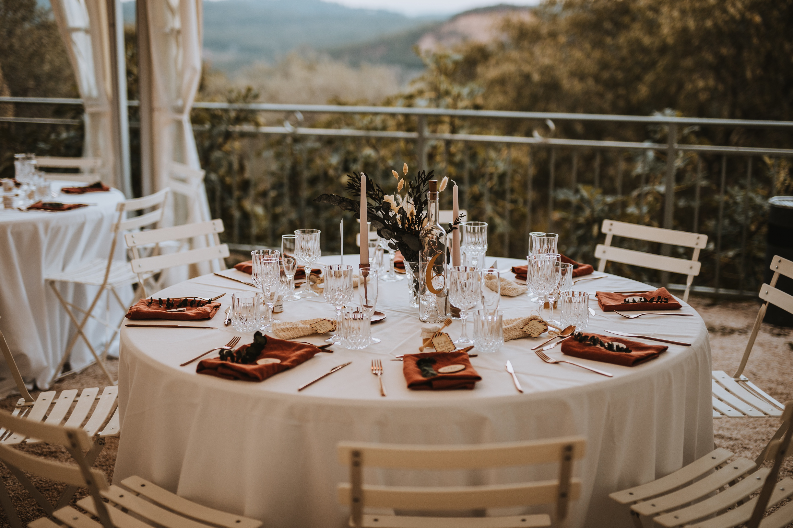
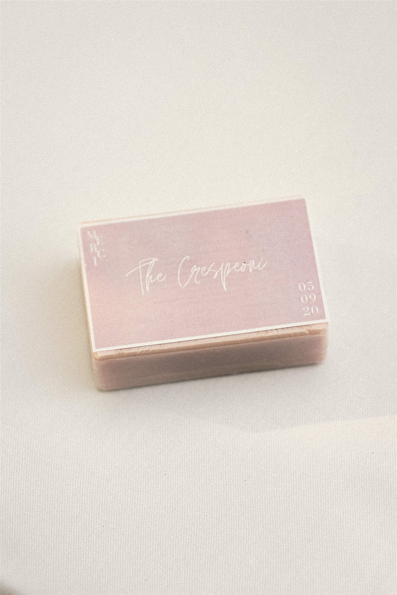

Des conseils pratiques pour organiser un mariage respectueux de l’environnement
Organiser un mariage éco-responsable est une démarche passionnante, mais qui nécessite un peu plus de réflexion que celle d’un mariage traditionnel. Si vous souhaitez réduire l’empreinte écologique de votre événement, il est important d’éviter certaines erreurs qui peuvent nuire à l’objectif. Pour vous aider à planifier le mariage de vos rêves tout en étant respectueux de la planète, voici les 10 erreurs à ne pas commettre lors de la planification d’un mariage éco-responsable.
1. Ignorer l’impact environnemental du lieu de mariage
Le choix du lieu de réception est crucial dans l’organisation d’un mariage éco-responsable. Beaucoup de couples se concentrent uniquement sur l’esthétique et oublient de prendre en compte l’impact écologique du lieu. Assurez-vous que le lieu que vous choisissez applique des pratiques durables : gestion des déchets, réduction de la consommation d’énergie, etc. Préférez un lieu local pour limiter l’empreinte carbone liée au transport des invités.
2. Choisir des décorations jetables
Les décorations sont souvent l’une des principales sources de déchets lors d’un mariage. Évitez les décorations jetables en plastique ou en papier. Optez pour des éléments réutilisables, comme des guirlandes en tissu, des fleurs séchées, ou des objets vintage. Les décorations faites maison sont aussi une excellente option pour personnaliser votre mariage tout en réduisant les déchets. Sabine, Creasab, est en mesure de vous guider sur votre décoration de mariage éco-responsable, contactez-la de ma part !

3. Sous-estimer l’importance des invitations numériques
Les invitations papier sont une tradition, mais elles peuvent générer une grande quantité de déchets. L’erreur commune consiste à imprimer des invitations en grande quantité sans envisager des alternatives plus écologiques. Pour un mariage zéro déchet, optez pour des invitations numériques ou un site web de mariage. Cela réduit considérablement l’utilisation du papier et vous permet de mettre à jour les informations en temps réel.
4. Ne pas prendre en compte les produits alimentaires et leur provenance
L’alimentation a un grand impact sur l’environnement, particulièrement en matière de production de viande et de transport des produits. Beaucoup de couples font l’erreur de ne pas vérifier la provenance des produits alimentaires. Assurez-vous que votre traiteur utilise des produits locaux, de saison et biologiques. Préférez aussi un menu végétarien ou végétalien, qui a une empreinte carbone moins importante que les menus carnés.

5. Ignorer la gestion des déchets pendant l’événement
Ne pas prévoir de gestion des déchets pendant le mariage est une erreur courante. Il est essentiel d’installer des poubelles de tri pour encourager le recyclage et le compostage des restes alimentaires. Discutez avec votre lieu de réception pour mettre en place des solutions adaptées et informez vos invités sur la manière de trier les déchets pendant l’événement.
6. Utiliser des tenues non durables
Le choix des tenues de mariage peut aussi avoir un impact sur l’environnement. De nombreux couples choisissent des robes ou costumes fabriqués à partir de matériaux non durables ou produits de manière non éthique. Une erreur fréquente est de ne pas explorer les options de location, de seconde main ou de créateurs qui privilégient des matériaux écologiques. Choisir des vêtements de mariage durables est essentiel pour réduire l’empreinte environnementale.
7. Ne pas planifier des transports responsables
Les déplacements des invités vers le lieu de mariage peuvent générer une quantité importante de CO2. Ne pas prévoir de solutions pour limiter l’impact écologique des transports est une erreur fréquente. Pour réduire les émissions de gaz à effet de serre, encouragez le covoiturage, louez des bus ou des navettes pour regrouper les invités, ou choisissez un lieu accessible en transport en commun.
8. Oublier l’impact des cadeaux d’invités
Les cadeaux pour les invités sont souvent des objets inutiles et jetables qui finissent rapidement à la poubelle. Offrir des cadeaux d’invités non durables est une erreur courante dans les mariages traditionnels. Pour un mariage éco-responsable, choisissez des souvenirs réutilisables ou utiles, comme des plantes en pot, des bougies naturelles, ou même des dons à des associations en l’honneur des invités.

9. Ne pas inclure vos prestataires dans votre démarche durable
Il est important d’impliquer tous les prestataires dans votre démarche éco-responsable. Une erreur courante est de ne pas discuter de vos attentes écologiques avec eux. Prenez le temps de choisir des prestataires engagés dans la réduction de leur empreinte écologique, que ce soit un traiteur, un photographe ou un fleuriste. N’hésitez pas à leur poser des questions sur leurs pratiques durables avant de les choisir. Et si vous souhaitez un coup de main dans l’organisation de votre mariage éco-responsable, n’hésitez pas à m’envoyer un petit message !
10. Manquer d’organisation et de communication
La planification d’un mariage éco-responsable demande de l’organisation. Une erreur fréquente est de manquer de communication avec les prestataires, invités et famille concernant vos choix écologiques. Assurez-vous que tout le monde soit informé de vos intentions zéro déchet et que vos invités sachent à quoi s’attendre. La communication est la clé pour garantir le succès de votre mariage éco-responsable (et pas que !).
Conclusion : un mariage éco-responsable réussi grâce à une planification réfléchie
Éviter ces 10 erreurs vous permettra d’organiser un mariage éco-responsable et sans stress, tout en respectant vos valeurs écologiques. En faisant des choix réfléchis et durables à chaque étape de la planification, vous pourrez célébrer l’amour de manière plus respectueuse de la planète et offrir à vos invités une expérience inoubliable. Un mariage zéro déchet est un engagement qui fait sens et qui permet de créer des souvenirs durables, tout en faisant une différence pour notre environnement.